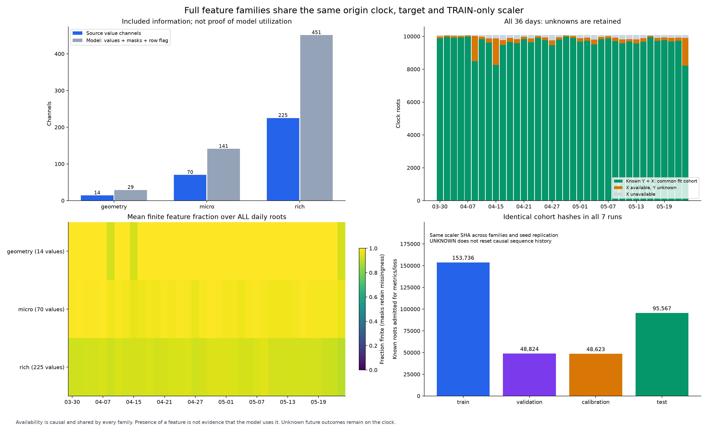
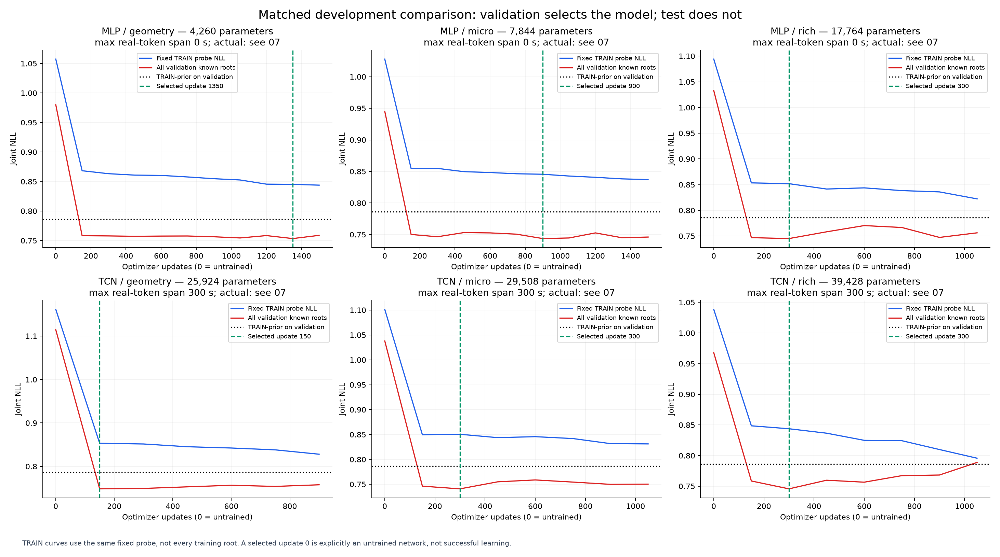
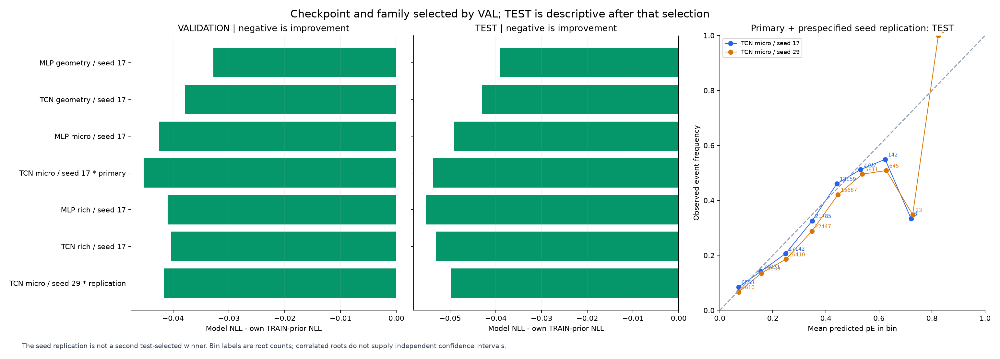
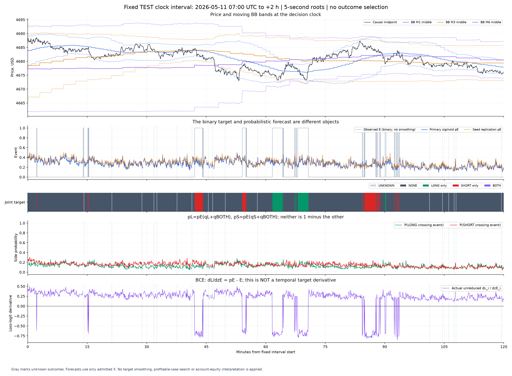
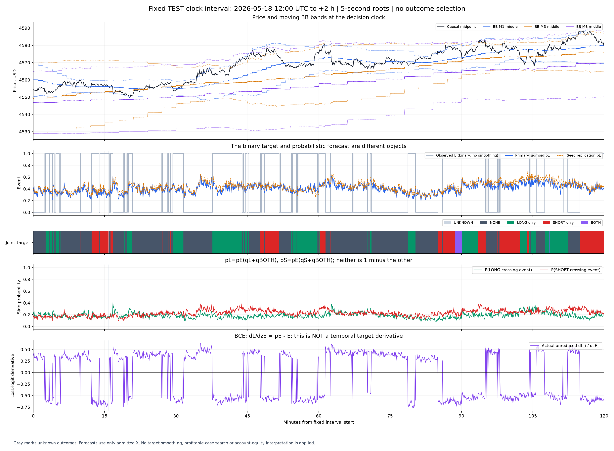
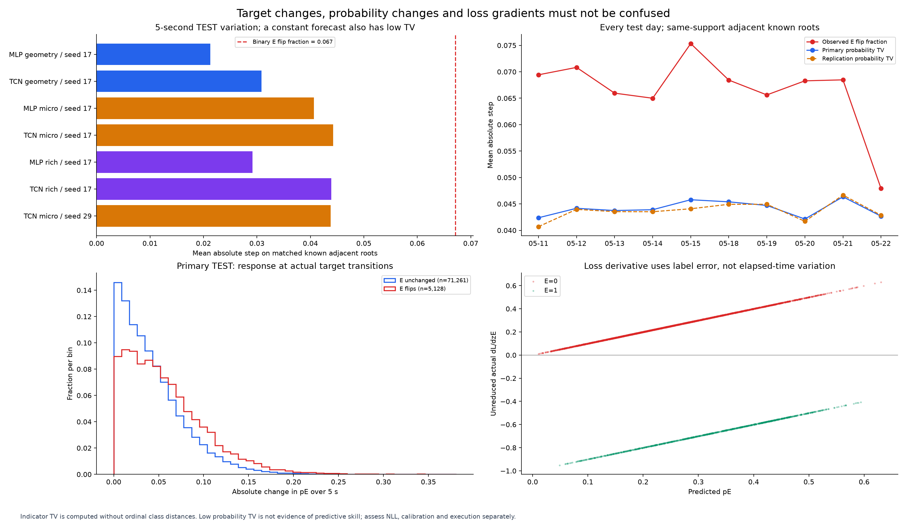
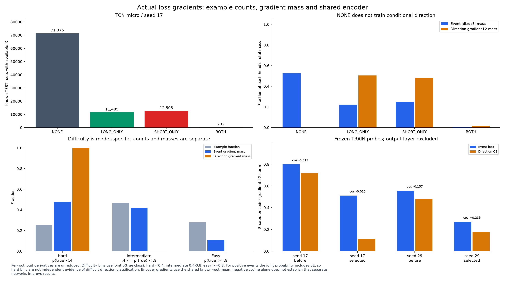
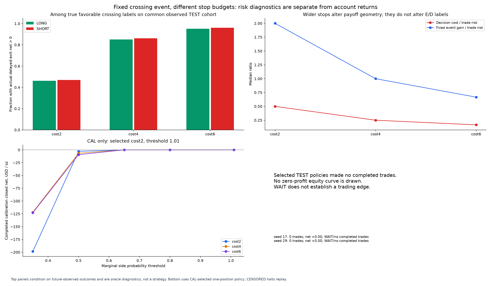
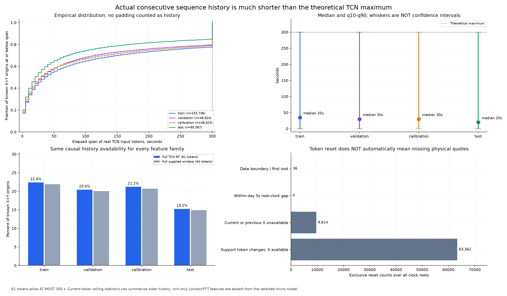
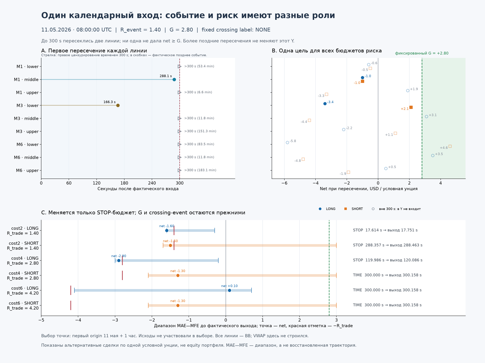

Многоблочный научный pipeline: событие пересечения, контекст и градиенты
36 торговых дней; 362,664 исходных точек на 5-секундном clock. Полные логические datasets geometry/micro/rich используют общие immutable значения, метки и индексы без копирования окон N×T×F.
Что зафиксировано
Основной run: TCN micro / seed 17, выбран только по validation joint NLL. Реплика: TCN micro / seed 29; она не является вторым победителем, выбранным по test. Разница test NLL основного run и собственного train-prior: -0.0538, отрицательное значение означает улучшение вероятностной метрики.
Модель различает наличие crossing-event лучше, чем его направление. TEST event AUC: 0.6851 и 0.6850 у двух seed. Conditional direction NLL: 0.7313 / 0.7302 против 0.7367 у prior — значительно более слабое улучшение. Это поддерживает отдельную оценку event и direction; прибыльность из этих чисел не следует.
CAL выбрал WAIT в 7 из 7 прогонов. В заданной сетке риска и порогов не найдено положительного полного CAL-replay с минимальным числом сделок. Основной micro-вариант не получает 29 London-context и 126 FFT-признаков; добавление rich-пакета не дало согласованного улучшения VAL между архитектурами. Главный обнаруженный bottleneck последовательности — короткая реальная история после причинных сбросов: TEST-медиана 20 секунд при максимуме 300.
Наличие признаков, обучаемость и экономическая пригодность — отдельные утверждения. Более плавный pE не означает более предсказуемую возможность. Исторические даты новые относительно февральского scientific-v1, но часть могла встречаться в прежних экспериментах репозитория.
Все результаты в переносимом JSON · Suite и зафиксированный выбор · Selection receipt · Методология и гиперпараметры · Покрытие признаков · SHA визуального отчёта · Визуальный аудит Sol 6.1
Общая задача и границы наблюдаемости
Primary target сохраняет BB M1/M3/M6 и первые пересечения всех девяти отдельных линий — lower/middle/upper каждого масштаба: фиксированное достаточно большое движение за 300 секунд. NONE/LONG_ONLY/SHORT_ONLY/BOTH описывают будущую карту. Event-head обучается BCE, направление — conditional CE только при известном положительном event. UNKNOWN не становится NONE и не участвует в supervised loss.
R_event и G_event заморожены для всех риск-планов. Изменение стоп-бюджета R_trade не меняет event-метку. Исполнение использует отдельный причинный replay, задержки входа/выхода, комиссии и поддержку источника. Перебор риска и порога допускается на CAL; TEST не выбирает параметры.
R_event=max(2×(spread+0.30), 0.10×BB1_half, 0.50); G_event=2×R_event. В риск-сетке коэффициент стоимости у R_trade равен 2/4/6, а G_event остаётся тем же.
TCN RF=61 при пятисекундных отсчётах допускает максимум 300 секунд между первым и текущим реальным токеном. Это верхняя граница, а не фактически доступная история каждого примера. В известной TEST-выборке медиана составляет 20 секунд, полные 61 токенов доступны лишь в 15.24% точек. Padding не считается наблюдаемой историей. Это свойство причинных сегментов и общего loader, одинаковое для всех семейств признаков.
Основная модель использует micro. Только семейство rich добавляет 29 признаков текущего и предыдущего London-контекста и 126 спектральных признаков; выбранная micro-модель их не получает. Даже у rich это агрегаты и M1-спектры, а не полный двухдневный микроструктурный путь. Короткий span последовательных токенов не означает столь же короткий суммарный информационный горизонт: текущий токен содержит rolling-статистики micro до 128 секунд и BB-геометрию. Контекстный VWAP остаётся midpoint/volume proxy, а не точным VWAP цен всех T-сделок.
Историю сбрасывают смена даты, разрыв пятисекундного clock, недоступность текущего или предыдущего X и смена support token; неизвестный Y её не сбрасывает. Смена support token сама по себе не доказывает пропуск физических котировок. Независимый аудит источника и причин сброса отделяет эти механизмы. Увеличение nominal sequence length без исправления обоснованных ограничений поддержки не добавит модели реальной истории.
| Split | Медиана реальной истории | q10 / q90 | Полный RF, 61 токенов | Полное окно, 64 токена |
|---|
| train | 35 s | 0 / 300 s | 22.37% | 21.89% |
| validation | 30 s | 0 / 300 s | 20.42% | 20.04% |
| calibration | 30 s | 0 / 300 s | 21.20% | 20.68% |
| test | 20 s | 0 / 300 s | 15.24% | 14.89% |
| Split | Диапазон | Дней | Известные Y + X | NONE / L / S / BOTH |
|---|
| train | 2026-03-30 — 2026-04-24 | 16 | 153,736 | [103321, 24009, 25635, 771] |
| validation | 2026-04-27 — 2026-05-01 | 5 | 48,824 | [36004, 6230, 6390, 200] |
| calibration | 2026-05-04 — 2026-05-08 | 5 | 48,623 | [35505, 6045, 6813, 260] |
| test | 2026-05-11 — 2026-05-22 | 10 | 95,567 | [71375, 11485, 12505, 202] |
Сменяемые признаки и модели
| Семейство | Значения | Вход с масками |
|---|
| geometry | 14 | 29 |
| micro | 70 | 141 |
| rich | 225 | 451 |
Все сравнения прошли проверку одинаковых cohort hashes и scaler SHA. Scaler использует только допустимые TRAIN-строки независимо от известности их Y. Для temporal windows важны пропуски и support token; неизвестный будущий исход сам по себе не обрывает историю. Начальный checkpoint update=0 явно обозначается как необученная сеть.
Бюджет ограничен 1500 optimizer updates с validation каждые 150 и patience=5 проверок. Это ограниченный baseline, а не доказательство сходимости всех вариантов. Hidden width одинаков, но число параметров меняется с входной размерностью. MLP видит текущий токен, TCN — последовательность: сравнение одновременно меняет архитектуру и доступную подробную историю.
| Run | Роль | Update | VAL NLL | TEST NLL | Prior NLL | TEST event AUC | Артефакт |
|---|
| MLP geometry / seed 17 | кандидат | 1350 | 0.7534 | 0.7265 | 0.7655 | 0.653 | metrics JSON |
| TCN geometry / seed 17 | кандидат | 150 | 0.7483 | 0.7226 | 0.7655 | 0.658 | metrics JSON |
| MLP micro / seed 17 | кандидат | 900 | 0.7436 | 0.7165 | 0.7655 | 0.686 | metrics JSON |
| TCN micro / seed 17 | основной, выбор по VAL | 300 | 0.7408 | 0.7117 | 0.7655 | 0.685 | metrics JSON |
| MLP rich / seed 17 | кандидат | 300 | 0.7451 | 0.7103 | 0.7655 | 0.687 | metrics JSON |
| TCN rich / seed 17 | кандидат | 300 | 0.7457 | 0.7124 | 0.7655 | 0.684 | metrics JSON |
| TCN micro / seed 29 | реплика seed | 450 | 0.7445 | 0.7157 | 0.7655 | 0.685 | metrics JSON |
Как читать градиенты
- Изменение бинарного event во времени: разность E(t)−E(t−5s). Для категорий нельзя использовать расстояние между кодами 0/1/2/3.
- Производная loss по логиту event для BCE: pE−E. Она выражает ошибку текущего прогноза и не является скоростью изменения цены или таргета.
- Encoder gradient измеряет воздействие loss на общие параметры. Cosine event/direction на фиксированном TRAIN-probe является диагностикой взаимодействия, а не доказательством необходимости двух сетей.
- pL и pS получены из согласованного совместного распределения; наличие BOTH не позволяет положить pS=1−pL. Это вероятности соответствующих событий пересечения, а не выигрыша исполнения.
Easy/hard-разрезы показывают отдельно количество примеров и их вклад в абсолютную массу градиента. Группы определены по совместной вероятности истинного класса: hard <0.4, intermediate 0.4–0.8, easy ≥0.8. У положительного event она содержит множитель pE, поэтому попадание почти всех положительных примеров в hard само по себе не доказывает отдельную сложность направления. Редкий большой убыток не объявляется ошибочной меткой только потому, что он труден для сети.
Признаки, покрытие и общая выборка

Availability is causal and shared by every family. Presence of a feature is not evidence that the model uses it. Unknown future outcomes remain on the clock.
Обучение при смене семейства и архитектуры

TRAIN curves use the same fixed probe, not every training root. A selected update 0 is explicitly an untrained network, not successful learning.
Выбор по validation и проверка на test

The seed replication is not a second test-selected winner. Bin labels are root counts; correlated roots do not supply independent confidence intervals.
Фиксированный участок 2026-05-11, London +0 ч

Gray marks unknown outcomes. Forecasts use only admitted X. No target smoothing, profitable-case search or account-equity interpretation is applied.
Фиксированный участок 2026-05-18, London +5 ч

Gray marks unknown outcomes. Forecasts use only admitted X. No target smoothing, profitable-case search or account-equity interpretation is applied.
Изменения во времени и градиенты loss

Indicator TV is computed without ordinal class distances. Low probability TV is not evidence of predictive skill; assess NLL, calibration and execution separately.
Масса градиента и взаимодействие голов

Per-root logit derivatives are unreduced. Difficulty bins use joint p(true class): hard <0.4, intermediate 0.4-0.8, easy >=0.8. For positive events the joint probability includes pE, so hard bins are not independent evidence of difficult direction classification. Encoder gradients use the shared known-root mean; negative cosine alone does not establish that separate networks improve results.
Риск, издержки и отдельное исполнение

Top panels condition on future-observed outcomes and are oracle diagnostics, not a strategy. Bottom uses CAL-selected one-position policy; CENSORED halts replay.
Фактически доступная последовательная история

61 tokens allow AT MOST 300 s. Current-token rolling statistics can summarize older history; rich-only London/FFT features are absent from the selected micro model.
Одна фиксированная точка: девять первых пересечений и отдельные исполнения

Anchor is May 11 first origin +1 hour. Late hollow crossings do not enter the 300-second label. MAE/MFE ranges are saved excursions, not invented equity paths.
Экономическая граница результата
primary: cost2, threshold=1.01; WAIT / нет завершённых сделок; полный replay. confirmation: cost2, threshold=1.01; WAIT / нет завершённых сделок; полный replay.
Paired risk diagnostics ограничены общей выборкой с известными будущими исходами и служат измерению сохранения возможности. Это oracle-диагностика, не кривая капитала. В последовательном replay неизвестность не отфильтровывается задним числом: CENSORED останавливает оценку. Closed-cash drawdown не содержит внутрисделочную переоценку, а отсутствие сделок не доказывает положительного edge.
Хвосты высоких вероятностей с единичными наблюдениями или несколькими десятками коррелированных roots нельзя считать надёжной калибровкой торгового порога. На reliability-графике числа рядом с bins — объём выборки, а не число независимых событий; bins с n=1, n=3 или n=23 не подтверждают торговый edge.
Независимая сверка target/replay · Статистический аудит и зависимость примеров · Числа и ID фиксированного crossing-case
Основной baseline на графиках — TRAIN-prior. Если статистический аудит показывает дополнительный VAL-only prior, это вторичная post-hoc диагностика изменения частоты event, а не замена исходному benchmark или подбор по TEST.
Отчёт построен только по COMPLETE receipts и проверенным SHA. Два временных участка заданы до просмотра результата: May 11 London open +0…2h и May 18 +5…7h. Никакие модели этим скриптом не обучаются.